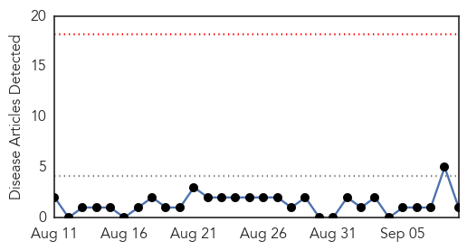
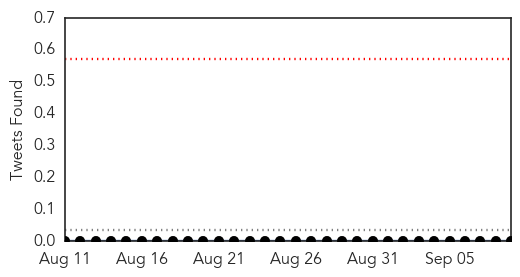
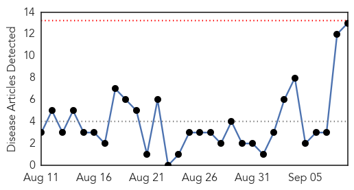
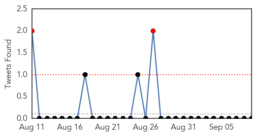
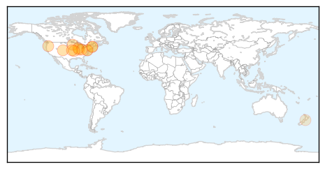
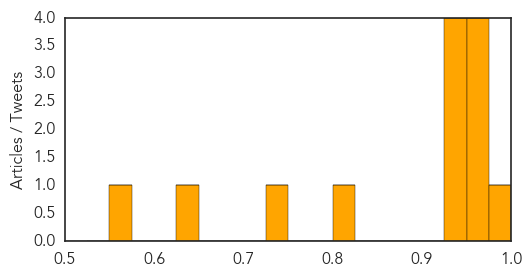

Hepatitis
30-Day Web Trend
0 alerts, 0 warnings

30-Day Twitter Trend
0 alerts, 0 warnings

Article Locations
Article Confidences

Top Articles:
Top Tweets:
-
No tweets found for Sep 09, 2014
Influenza
30-Day Web Trend
0 alerts, 0 warnings

30-Day Twitter Trend
2 alerts, 0 warnings

Article Locations
Article Confidences
Top Articles:
- 0.984
- Mysterious EV-D68: Vaccinated Children Could Be More Vulnerable
- 0.969
- Colorado among 10 states asking CDC for help with enterovirus 68
- 0.967
- Ore. health officials monitoring Midwest virus in case it appears here
- 0.967
- Colorado among 10 states asking CDC for help with enterovirus 68 - Story
- 0.960
- Hundreds of U.S. children stricken by respiratory illness
- 0.946
- Kids' Illness Spike Has CDC Tracking Rare Enterovirus
- 0.942
- Lab Finds First Influenza Positive Test
- 0.936
- CDC Details Latest on Enterovirus Outbreak
- 0.925
- Preventing spread of quickly-moving virus
- 0.813
- American Lung Association Statement on Recent Increase in Enterovirus D68
- 0.739
- WCAX.COM Local Vermont News, Weather and Sports-
- 0.642
- Celebrity doesn't come with an M.D.
- 0.566
- Medical and vet schools address infectious disease spread
Top Tweets:
-
No tweets found for Sep 09, 2014